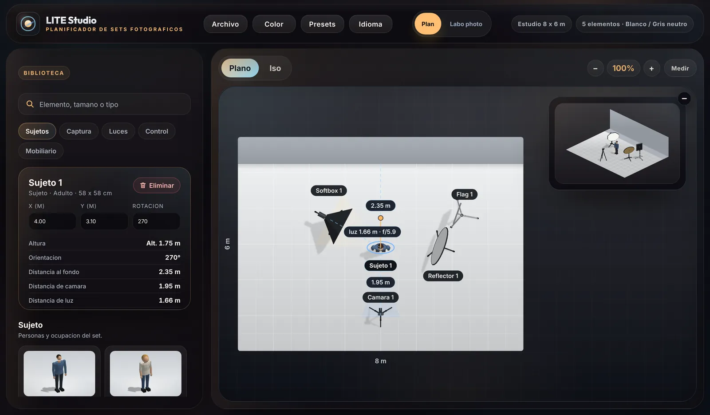
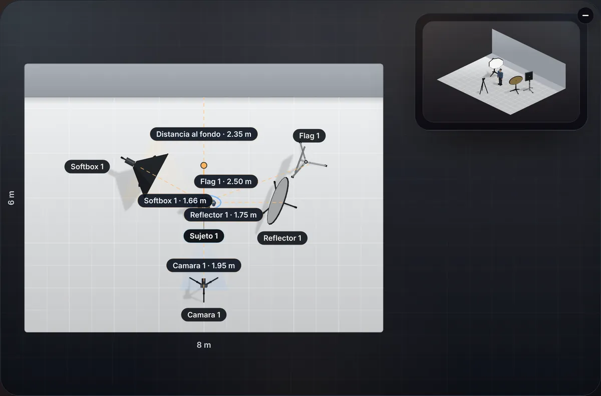
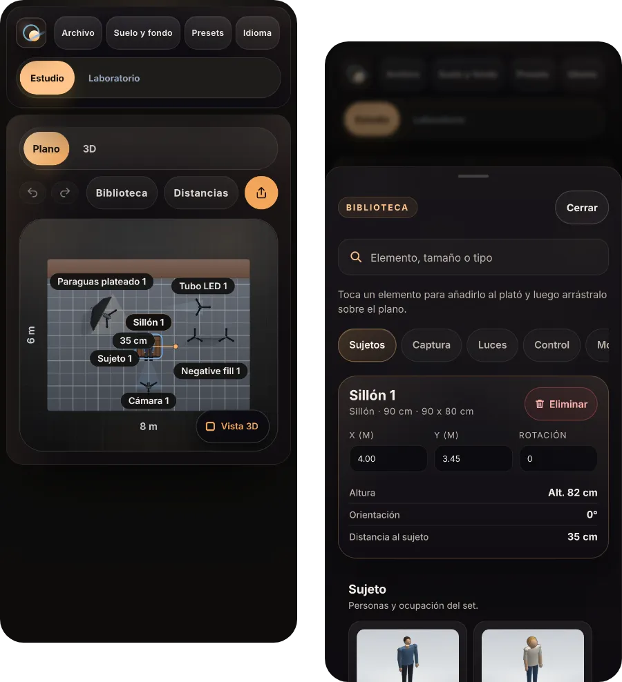

Esquema de iluminacion de retrato
Una base simple para retrato en estudio con key light a 45 grados, control del fill y plano imprimible.

Planificador de estudio fotográfico
Coloca modelo, cámara, luces y accesorios en un plano a escala. LITE Studio calcula las distancias, muestra la escena en 3D y exporta un esquema claro para enviar al equipo.

Cómo funciona
Elige entre 46 escenas tipo (retrato, belleza, producto, boudoir, entrevista…) o empieza en un estudio vacío de 8 × 6 m.
Añade equipo desde la biblioteca, muévelo con el ratón o con el dedo y gíralo con el tirador naranja. Cada elemento tiene sus dimensiones reales.
El modo Medida muestra las distancias útiles. Después exporta el plano en PNG o PDF, o copia la imagen para enviarla directamente.
Qué hace LITE Studio
Plano y vista 3D
Softboxes, paraguas, soportes C-stand, reflectores, mobiliario: los 80 elementos de la biblioteca están modelados con sus dimensiones reales. Pasa de la vista cenital a la vista 3D para valorar volúmenes y espacio alrededor del modelo.

Medidas
Activa Medida: LITE Studio muestra la distancia del modelo al fondo, a la cámara y a cada fuente, con una apertura estimada a ISO 100 para la luz principal. También puedes trazar tus propias medidas punto a punto.

Laboratorio fotográfico
Cambia el ISO, la apertura y la focal, y observa al instante el resultado en una foto: ruido, exposición, profundidad de campo y encuadre. El modo Comparar coloca la imagen de referencia junto a tu ajuste.

En el set
En tableta y móvil la interfaz se compacta: la biblioteca se abre como panel, el plano se amplía con dos dedos y todos los botones son fáciles de pulsar. Tus presets personales quedan guardados en el navegador.

Presets
Cada preset es un punto de partida creíble: cárgalo, adáptalo a tu estudio y guarda tu propia versión.
Gratis, sin cuenta y sin nada que instalar. Abre la aplicación y carga un preset para probar.
Para ir más lejos
Paginas SEO
Estas paginas responden a necesidades concretas y llevan al usuario directamente a la aplicacion con el preset correcto.
Una base simple para retrato en estudio con key light a 45 grados, control del fill y plano imprimible.
Mobiliario, ambiente, fondo, circulacion y luz para preparar una sesion boudoir en estudio.
Un setup de video en estudio claro para entrevistas, podcasts grabados y produccion corporate.